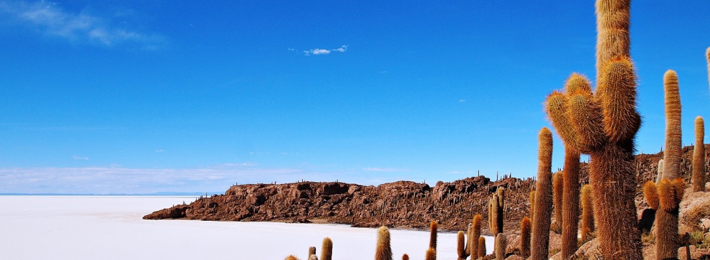
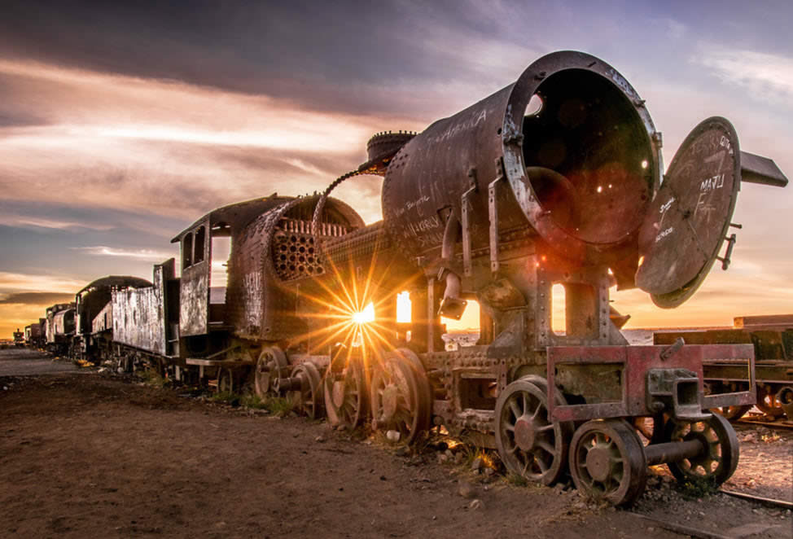
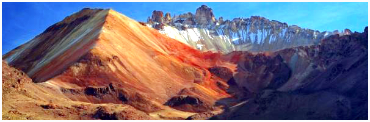
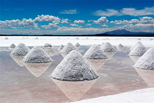
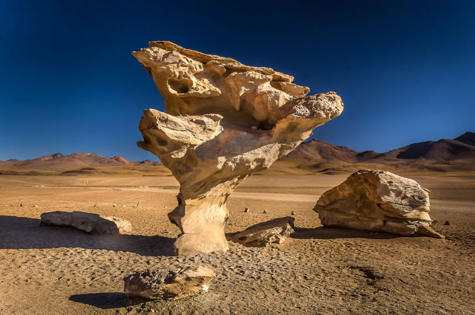

|  |
Isla de IncahuasiEs uno de los principales sitios turísticos de Bolivia, gracias a la atracción que representa el salar de Uyuni, también conocido en la región como salar de Tunupa, y que es el desierto de sal más grande del mundo. \ Opera un centro de recepción en la isla de los turistas que pertenecen a la Comunidad de Munipios de Llica y Tahua, la isla se encuentra en el territorio. Este centro tiene una entrada a los visitantes para acceder a un camino bien señalizado y fácilmente practicable que atraviesa la isla y le permite disfrutar de las vistas sobre el Lago Salado, el cielo azul cobalto y cientos de cactus. |
Cementerio de TrenesEste impresionante cementerio de “trenes chatarra” se visita normalmente antes de partir a recorrer el salar. Esqueletos de locomotoras y vagones esparcidos por el gélido suelo del altiplano, amasijos de hierros oxidados que se retuercen en su propio abandono, en su propia indiferencia… Una vez hubo una línea de ferrocarril en Bolivia, inaugurada en el último suspiro del Siglo XIX, que comunicó Uyuni con Antofagasta (ahora chileno) y que sirvió para transportar minerales como estaño, plata e incluso oro. Durante décadas fue un símbolo del progreso que parecía tocar al pueblo boliviano con la yema de los dedos pero con el tiempo y la pérdida en la guerra de su única porción de mar, resultó que no fue así y que las máquinas que se llevaban a arreglar cerca de la Estación de Uyuni, la primera del país, no volvieron jamás a deslizarse sobre raíles ni a despedir humo de sus gruesas chimeneas. Hoy el óxido decolora las piezas desgastadas de una esperanza en el conocido como Cementerio de los trenes olvidados. |
 |
|  |
Desierto de Sal-Volcan de TunupaVolcan Tunupa es un estrato volcán inactivo de Bolivia ubicado entre el borde norte del salar de Uyuni y el salar de Coipasa este volcán tiene una altura de 5.432 metros sobre el nivel del mar. Lleva este nombre debido al Dios del trueno y el Rayo Tunupa, es también altar del mismo. Dentro de la cultura andina está considerado una montaña sagrada o mallku. Un mallku es una deidad aimara que representa la cumbre, \ no sólo geográfica, sino también jerárquica. Representa la fuente de la vida de las montañas, ya que por sus cumbres en las épocas de deshielo, cae el agua que da la vida. En el volcán Tunupa podemos disfrutar de hermosos contrastes donde los colores azules, rojos, violetas y amarillos se van mezclando y dando distintos tonos al ambiente, debido a las grandes conmociones geológicas. Subiendo al crater podemos observar una linda vista de todo el salar y mas hermosa aun esperando el atardecer . |
Minas de colchaniColchani es un pueblo «salado», literalmente, vive de la sal. Se encuentra en uno de los extremos del Salar de Uyuni. Los pobladores extraen y procesan la sal de manera artesanal, tal cual lo hacían sus antepasados. En la zona de explotación es común ver decenas de cónicos montículos de sal, simétricamente colocados, lo que le da un aspecto “fotogénico” a esta parte del salar. |
 |
|  |
Desierto de SiloliEl Desierto de Siloli El Desierto de Siloli, además de ser uno de los mas áridos del mundo, se caracteriza por sus extrañas formaciones rocosas. Sin duda, la mas famosa de ellas, es uno de los íconos de Uyuni, el Árbol de Piedra; una formación petra que mas se parece a un gran hongo que un árbol. Esta solitaria formación geomorfológica, ha sido erosionadas por el fuerte to, y la arena del desierto, durante millones de años. El Árbol de Piedra mantiene un equilibro que desafía la ley de la gravedad. Su estrecha base sostiene una gran mole de piedra de casi 5 ms de altura. |